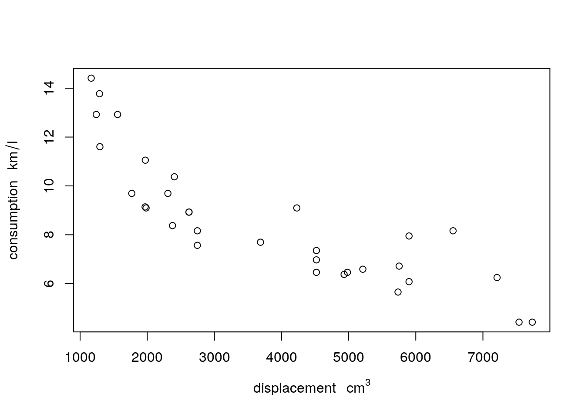
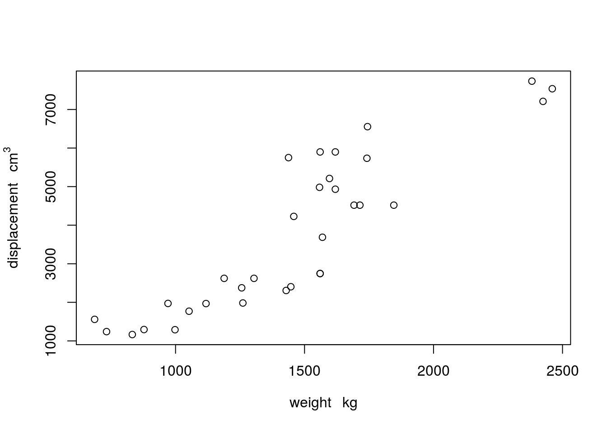
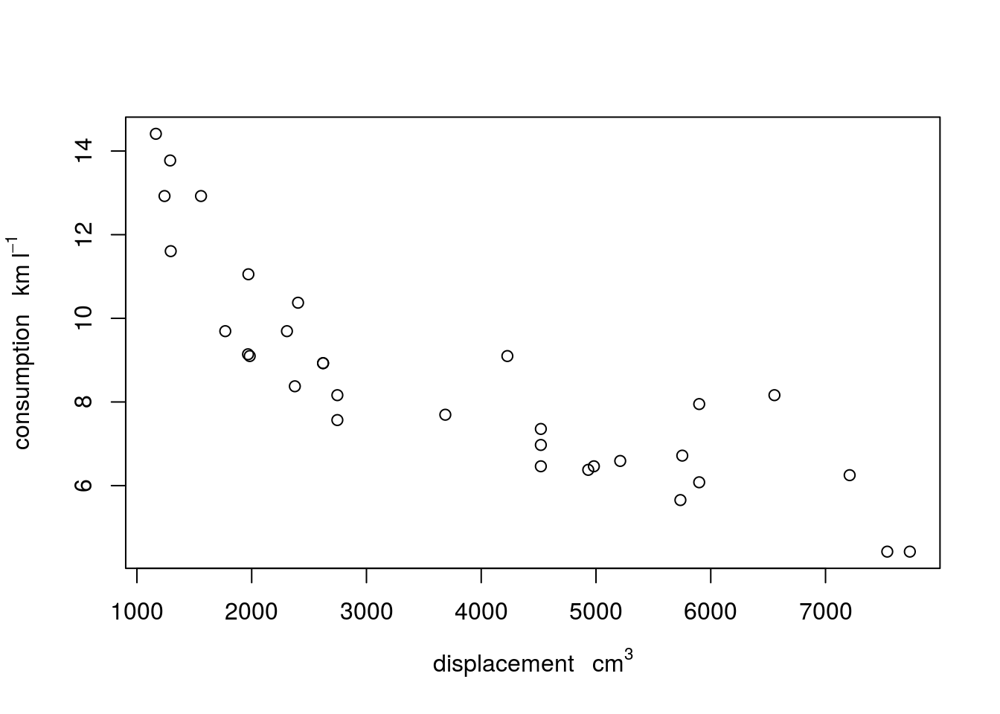
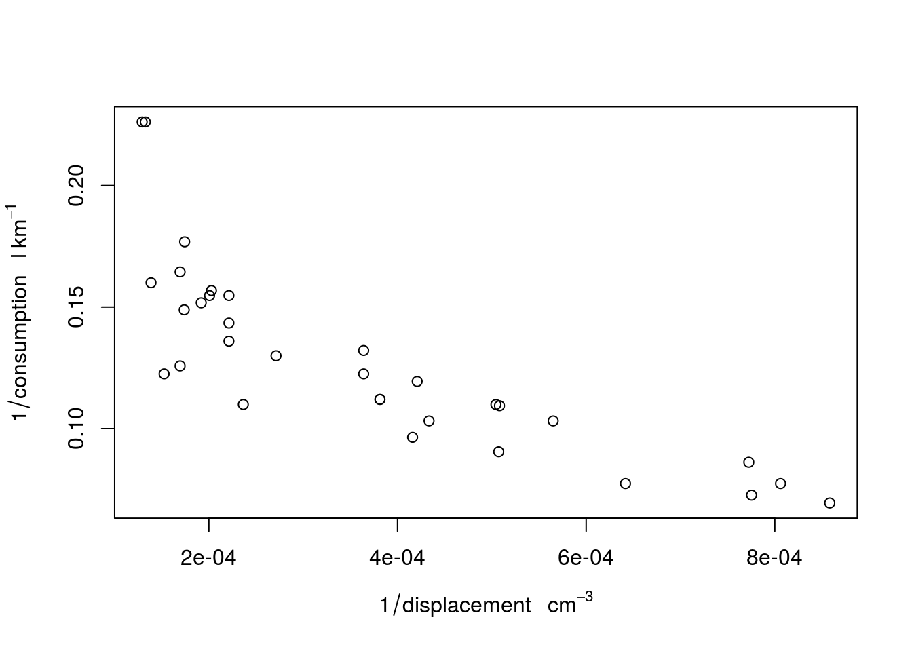

R has little support for physical measurement units. The exception is formed by time differences: time differences objects of class difftime have a units attribute that can be modified:
t1 = Sys.time()
t2 = t1 + 3600
d = t2 - t1
class(d)
## [1] "difftime"
units(d)
## [1] "hours"
d
## Time difference of 1 hours
units(d) = "secs"
d
## Time difference of 3600 secsWe see here that the units method is used to retrieve and modify the unit of time differences.
The units package generalizes this idea to other physical units, building upon the udunits2 R package, which in turn is build upon the udunits2 C library. The udunits2 library provides the following operations:
m/s is a valid physical unitm/s and km/h are convertibleThe units R package uses R package udunits2 to extend R with functionality for manipulating numeric vectors that have physical measurement units associated with them, in a similar way as difftime objects behave.
Existing units are resolved from a database in the units package, called ud_units. We can see the first three elements of it by
library(units)
ud_units[1:3]
## $m
## 1 m
##
## $kg
## 1 kg
##
## $s
## 1 sWe can set units to numerical values by set_units:
(a <- set_units(runif(10), m/s))
## Units: m/s
## [1] 0.66324967 0.07595123 0.14506026 0.13102854 0.11982429 0.12946322
## [7] 0.93012527 0.08961106 0.84382653 0.94102084the result, e.g.
set_units(10, m/s)
## 10 m/sliterally means “10 times 1 m divided by 1 s”. In writing, the “1” values are omitted, and the multiplication is implicit.
The units package comes with a list of over 3000 predefined units,
length(ud_units)
## [1] 3225We can retrieve a single unit from the ud_units database by
with(ud_units, km/h)
## 1 km/hWhen conversion is meaningful, such as hours to seconds or meters to kilometers, conversion can be done explicitly by setting the units of a vector
b = a
units(b) <- with(ud_units, km/h)
b
## Units: km/h
## [1] 2.3876988 0.2734244 0.5222169 0.4717027 0.4313674 0.4660676 3.3484510
## [8] 0.3225998 3.0377755 3.3876750Arithmetic operations verify units, and create new ones
a + a
## Units: m/s
## [1] 1.3264993 0.1519025 0.2901205 0.2620571 0.2396486 0.2589264 1.8602505
## [8] 0.1792221 1.6876531 1.8820417
a * a
## Units: m^2/s^2
## [1] 0.439900131 0.005768589 0.021042480 0.017168478 0.014357860
## [6] 0.016760724 0.865133009 0.008030141 0.712043216 0.885520231
a ^ 2
## Units: m^2/s^2
## [1] 0.439900131 0.005768589 0.021042480 0.017168478 0.014357860
## [6] 0.016760724 0.865133009 0.008030141 0.712043216 0.885520231
a ** -2
## Units: s^2/m^2
## [1] 2.273243 173.352627 47.522915 58.246281 69.648262 59.663292
## [7] 1.155892 124.530811 1.404409 1.129280and convert to the units of the first argument if necessary:
a + b # m/s + km/h -> m/s
## Units: m/s
## [1] 1.3264993 0.1519025 0.2901205 0.2620571 0.2396486 0.2589264 1.8602505
## [8] 0.1792221 1.6876531 1.8820417Currently, powers are only supported for integer powers, so using a ** 2.5 would result in an error.
There are some basic simplification of units:
t <- with(ud_units, s)
a * t
## Units: m
## [1] 0.66324967 0.07595123 0.14506026 0.13102854 0.11982429 0.12946322
## [7] 0.93012527 0.08961106 0.84382653 0.94102084which also work when units need to be converted before they can be simplified:
t <- with(ud_units, min)
a * t
## Units: m
## [1] 39.794980 4.557074 8.703616 7.861712 7.189457 7.767793 55.807516
## [8] 5.376663 50.629592 56.461251Simplification to unit-less values gives the “1” as unit:
m <- with(ud_units, m)
a * t / m
## Units: 1
## [1] 39.794980 4.557074 8.703616 7.861712 7.189457 7.767793 55.807516
## [8] 5.376663 50.629592 56.461251Allowed operations that require convertible units are +, -, ==, !=, <, >, <=, >=. Operations that lead to new units are *, /, and the power operations ** and ^.
Mathematical operations allowed are: abs, sign, floor, ceiling, trunc, round, signif, log, cumsum, cummax, cummin.
signif(a ** 2 / 3, 3)
## Units: m^2/s^2
## [1] 0.14700 0.00192 0.00701 0.00572 0.00479 0.00559 0.28800 0.00268
## [9] 0.23700 0.29500
cumsum(a)
## Units: m/s
## [1] 0.6632497 0.7392009 0.8842612 1.0152897 1.1351140 1.2645772 2.1947025
## [8] 2.2843135 3.1281401 4.0691609
log(a) # base defaults to exp(1)
## Units: (ln(m/s))
## [1] -0.41060378 -2.57766391 -1.93060601 -2.03234012 -2.12172887
## [6] -2.04435848 -0.07243601 -2.41227658 -0.16980834 -0.06078999
log(a, base = 10)
## Units: (lg(m/s))
## [1] -0.17832295 -1.11946521 -0.83845154 -0.88263410 -0.92145514
## [6] -0.88785361 -0.03145856 -1.04763841 -0.07374682 -0.02640076
log(a, base = 2)
## Units: (lb(m/s))
## [1] -0.59237603 -3.71878294 -2.78527572 -2.93204701 -3.06100773
## [6] -2.94938584 -0.10450307 -3.48017946 -0.24498164 -0.08770141Summary functions sum, min, max, and range are allowed:
sum(a)
## 4.069161 m/s
min(a)
## 0.07595123 m/s
max(a)
## 0.9410208 m/s
range(a)
## Units: m/s
## [1] 0.07595123 0.94102084
with(ud_units, min(m/s, km/h)) # converts to first unit:
## 0.2777778 m/sFollowing difftime, printing behaves differently for length-one vectors:
a
## Units: m/s
## [1] 0.66324967 0.07595123 0.14506026 0.13102854 0.11982429 0.12946322
## [7] 0.93012527 0.08961106 0.84382653 0.94102084
a[1]
## 0.6632497 m/sThe usual subsetting rules work:
a[2:5]
## Units: m/s
## [1] 0.07595123 0.14506026 0.13102854 0.11982429
a[-(1:9)]
## 0.9410208 m/sc(a,a)
## Units: m/s
## [1] 0.66324967 0.07595123 0.14506026 0.13102854 0.11982429 0.12946322
## [7] 0.93012527 0.08961106 0.84382653 0.94102084 0.66324967 0.07595123
## [13] 0.14506026 0.13102854 0.11982429 0.12946322 0.93012527 0.08961106
## [19] 0.84382653 0.94102084concatenation converts to the units of the first argument, if necessary:
c(a,b) # m/s, km/h -> m/s
## Units: m/s
## [1] 0.66324967 0.07595123 0.14506026 0.13102854 0.11982429 0.12946322
## [7] 0.93012527 0.08961106 0.84382653 0.94102084 0.66324967 0.07595123
## [13] 0.14506026 0.13102854 0.11982429 0.12946322 0.93012527 0.08961106
## [19] 0.84382653 0.94102084
c(b,a) # km/h, m/s -> km/h
## Units: km/h
## [1] 2.3876988 0.2734244 0.5222169 0.4717027 0.4313674 0.4660676 3.3484510
## [8] 0.3225998 3.0377755 3.3876750 2.3876988 0.2734244 0.5222169 0.4717027
## [15] 0.4313674 0.4660676 3.3484510 0.3225998 3.0377755 3.3876750difftime
From difftime to units:
t1 = Sys.time()
t2 = t1 + 3600
d = t2 - t1
(du = as_units(d))
## 1 hvice versa:
(dt = as_difftime(du))
## Time difference of 1 hours
class(dt)
## [1] "difftime"matrix objectsset_units(matrix(1:4,2,2), m/s)
## Units: m/s
## [,1] [,2]
## [1,] 1 3
## [2,] 2 4
set_units(matrix(1:4,2,2), m/s * 4 * m/s)
## Units: m^2/s^2
## [,1] [,2]
## [1,] 4 12
## [2,] 8 16but
strips units.
data.framesunits in data.frame objects are printed, but do not appear in summary:.
set.seed(131)
d <- data.frame(x = runif(4),
y = set_units(runif(4), s),
z = set_units(1:4, m/s))
d
## x y z
## 1 0.2064370 0.8463468 s 1 m/s
## 2 0.1249422 0.5292048 s 2 m/s
## 3 0.2932732 0.5186254 s 3 m/s
## 4 0.3757797 0.2378545 s 4 m/s
summary(d)
## x y z
## Min. :0.1249 Min. :0.2379 Min. :1.00
## 1st Qu.:0.1861 1st Qu.:0.4484 1st Qu.:1.75
## Median :0.2499 Median :0.5239 Median :2.50
## Mean :0.2501 Mean :0.5330 Mean :2.50
## 3rd Qu.:0.3139 3rd Qu.:0.6085 3rd Qu.:3.25
## Max. :0.3758 Max. :0.8463 Max. :4.00
d$yz = with(d, y * z)
d
## x y z yz
## 1 0.2064370 0.8463468 s 1 m/s 0.8463468 m
## 2 0.1249422 0.5292048 s 2 m/s 1.0584095 m
## 3 0.2932732 0.5186254 s 3 m/s 1.5558761 m
## 4 0.3757797 0.2378545 s 4 m/s 0.9514180 m
d[1, "yz"]
## 0.8463468 mUnits are often written in the form m2 s-1, for square meter per second. This can be defined as unit, but is not interpreted by R:
(x = 1:10 * make_unit("m2 s-1"))
## Units: (m2 s-1)
## [1] 1 2 3 4 5 6 7 8 9 10udunits understands such string, and can convert them
y = 1:10 * with(ud_units, m^2/s)
x + y
## Units: (m2 s-1)
## [1] 2 4 6 8 10 12 14 16 18 20but R cannot simplify them:
x/y
## Units: (m2 s-1)*s/m^2
## [1] 1 1 1 1 1 1 1 1 1 1Instead, we can tell R to parse such a string, which then allows simplification:
(z = 1:10 * parse_unit("m2 s-1"))
## Units: m^2/s
## [1] 1 2 3 4 5 6 7 8 9 10
z + y
## Units: m^2/s
## [1] 2 4 6 8 10 12 14 16 18 20
z / y
## Units: 1
## [1] 1 1 1 1 1 1 1 1 1 1Printing units in character form is done by
deparse_unit(z)
## [1] "m2 s-1"Base scatter plots and histograms support automatic unit placement in axis labels. In the following example we first convert to SI units. (Unit in needs a bit special treatment, because in is a reserved word in R.)
mar = par("mar") + c(0, .3, 0, 0)
displacement = mtcars$disp * ud_units[["in"]]^3
units(displacement) = with(ud_units, cm^3)
weight = mtcars$wt * 1000 * with(ud_units, lb)
units(weight) = with(ud_units, kg)
par(mar = mar)
plot(weight, displacement)We can change grouping symbols from [ ] into ( ):
units_options(group = c("(", ")") ) # parenthesis instead of square brackets
par(mar = mar)
plot(weight, displacement)
We can also remove grouping symbols, increase space between variable name and unit by:
units_options(sep = c("~~~", "~"), group = c("", "")) # no brackets; extra space
par(mar = mar)
plot(weight, displacement)
More complex units can be plotted either with negative powers, or as divisions, by modifying one of units’s global options using units_options:
gallon = make_unit("gallon")
consumption = mtcars$mpg * with(ud_units, mi/gallon)
units(consumption) = with(ud_units, km/l)
par(mar = mar)
plot(displacement, consumption) # division in consumptionunits_options(negative_power = TRUE) # division becomes ^-1
plot(displacement, consumption) # division in consumptionAs usual, units modify automatically in expressions:
units_options(negative_power = TRUE) # division becomes ^-1
par(mar = mar)
plot(displacement, consumption)
plot(1/displacement, 1/consumption)